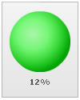

| Creating a simple Bulb gauge |
In our first bulb gauge, we will be plotting Attrition Rate from 0-100%. The final outcome will be: |
|  |
The various tasks involved in building this gauge are:
|
| Data for the gauge |
<chart upperLimit="100" lowerLimit="0" numberSuffix="%"> {
"chart": {
"upperlimit": "100",
"lowerlimit": "0",
"numbersuffix": "%"
},
"colorrange": {
"color": [
{
"minvalue": "0",
"maxvalue": "15",
"label": "Low",
"code": "00FF00"
},
{
"minvalue": "15",
"maxvalue": "35",
"label": "Medium",
"code": "FFFF00"
},
{
"minvalue": "35",
"maxvalue": "100",
"label": "High",
"code": "FF0000"
}
]
},
"value": "12"
} |
The Bulb gauge for the above data will look as under: |
| See it live! |
| Explanation |
First of all comes the <chart> element which is the starting element for any chart/gauge/graph that you create using FusionWidgets. Now we define the lower and upper limits of the gauge scale. To define the limits, we use the lowerLimit and upperLimit attributes of the <chart> element. We also set the number suffix character (the character which will show up at the end the number) using the numberSuffix attribute. |
There are other attributes of the <chart> element which we will not be delving into now, because of this being a really basic gauge. Next, we need to define our color range. As we had earlier seen, this gauge has 3 color ranges. To define the color range, we use the <colorRange> element, which is an immediate child of the <chart> element. Under each <colorRange> element, we place a <color> element specifying a single color range. The minValue attribute is used to define the lower limit of the color range and the maxValue attribute is used to define the upper limit of the color range. The label attribute is used to specify a name to the particular color range and the code attribute specifies the color of the range. |
<colorRange> "colorrange": {
"color": [
{
"minvalue": "0",
"maxvalue": "15",
"label": "Low",
"code": "00FF00"
},
{
"minvalue": "15",
"maxvalue": "35",
"label": "Medium",
"code": "FFFF00"
},
{
"minvalue": "35",
"maxvalue": "100",
"label": "High",
"code": "FF0000"
}
]
} |
| After that, we set the value of the gauge using the <value> element as shown under: |
|
For detailed explanation on JSON data format click here. |
| And this finishes our first bulb gauge. |